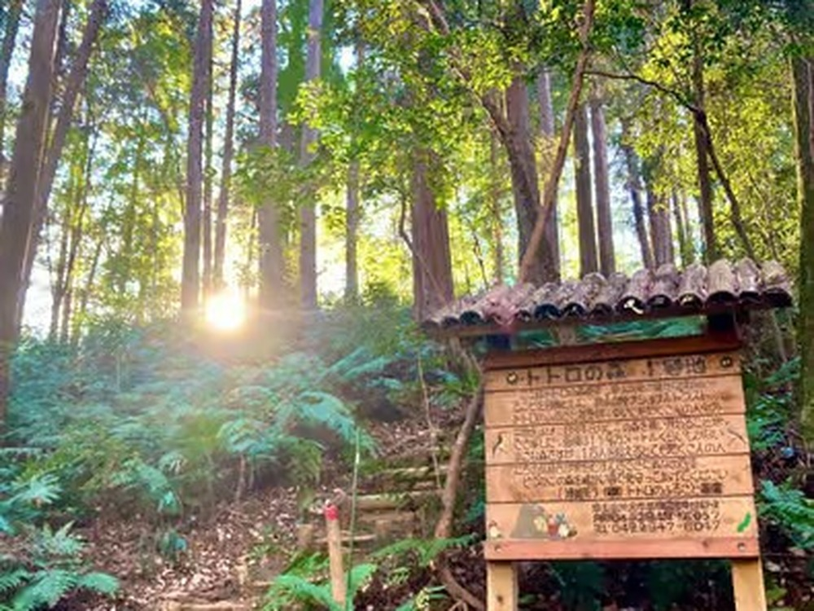

Tokyo in October: Clear Fuji Views, Cool Air, and Totoro's Forest at Its Best
If a guest asks me to pick one month to visit Tokyo, I usually say October before they finish the question. The humidity that hangs over the city from June through September finally lets go, the typhoon risk drops off sharply after the first week or two, and the light turns that clean, low-angle gold that makes every temple photo look better than it has any right to. It's the month I schedule my own hikes around, not just my guests' tours.
I live here year-round, so I notice the shift before most visitors would — the morning air has a bite to it by the third week, vending machine hot drinks start outselling the cold ones, and on a genuinely clear day you can suddenly see Mt. Fuji from spots around the city where it was just haze all summer. October is when Tokyo starts showing off a little.
The weather, honestly
Expect daytime highs easing from the low-to-mid 20s°C at the start of the month down toward the mid-teens by Halloween, with humidity finally comfortable rather than punishing. Early October can still catch the tail of typhoon season — it's worth a glance at the forecast if you're arriving in the first week or so — but by mid-month the weather turns reliably pleasant. Pack layers rather than one heavy jacket: a warm afternoon can turn into a genuinely cool evening once the sun drops.
Why this is Totoro forest season
This week I'm featuring the Totoro-Inspired Forest, Lake Sayama & Local Tea Walk, and October is exactly why. The Sayama Hills — the real, still-wild forest that inspired the cedar canopy in My Neighbor Totoro — are miserable in August's heat and slippery in the rainy season, but in October the paths dry out, the cedar smell sharpens in the cooler air, and walking for two-plus hours stops being an endurance test and starts being the whole point.

It's also the point in the year when the tea farmer we stop with pours a noticeably different cup — the first of the autumn-picked leaf starts appearing in October, and the flavor is rounder than the summer harvest. Small detail, but it's the kind of thing that only shows up if you're walking the same forest every week, year after year, the way I do.
Fuji-watching, and what's worth planning around
October is also prime season for a Mt. Fuji day trip. Summer haze usually keeps the mountain hidden even on days that look clear from the ground, but by mid-October the air thins out enough that Fuji reappears on the horizon on a good number of mornings — worth checking if a Kawaguchiko or Hakone day trip is on your list, since the payoff is much higher this month than in July or August.
On the calendar side: Sports Day (Taiiku no Hi) falls on the second Monday of October and is a national holiday, so trains and popular spots can be a touch busier that weekend. Shibuya's Halloween crowd builds through the last week of the month, mostly concentrated around the scramble crossing at night — easy to avoid if it's not what you're after, easy to find if it is.
Which walk to pick this month
October is kind to almost every tour on my roster, which makes it a genuinely easy month to plan around rather than fight. If forest air and a quiet lake are what you're after, the Totoro walk above is the one. If you'd rather trade cedar for stone, the Heirinji temple grounds in Niiza take on a different, sharper quiet once the summer cicadas go silent — worth it if meditation and old architecture interest you more than nature trails. And if your group is torn between the two, both sit within a similar train ride of Ikebukuro, so it's realistic to fit one in on a Saturday and the other the next day without much backtracking.
One practical note for October specifically: because the weather is this good, my own calendar fills up faster than in the muggier months, and weekend slots for the more popular walks go first. If you already know roughly which week you'll be in Tokyo, it's worth reaching out or booking a few weeks ahead rather than trying to grab a same-week weekend date once you land.
This week's featured walk: Tokyo's best month for it
Totoro-Inspired Forest, Lake Sayama & Local Tea Walk — small group (max 3), English-guided, tea included.
Check dates & book →Adding a Mt. Fuji day trip to your itinerary?
If clear skies are in the forecast, a Mt. Fuji, Lake Kawaguchiko & Oshino Hakkai day tour pairs well with a quieter, walking-paced morning like ours — or browse other Tokyo experiences to fill out the rest of the week.
Some links on this page are affiliate links — booking through them supports this site at no extra cost to you.